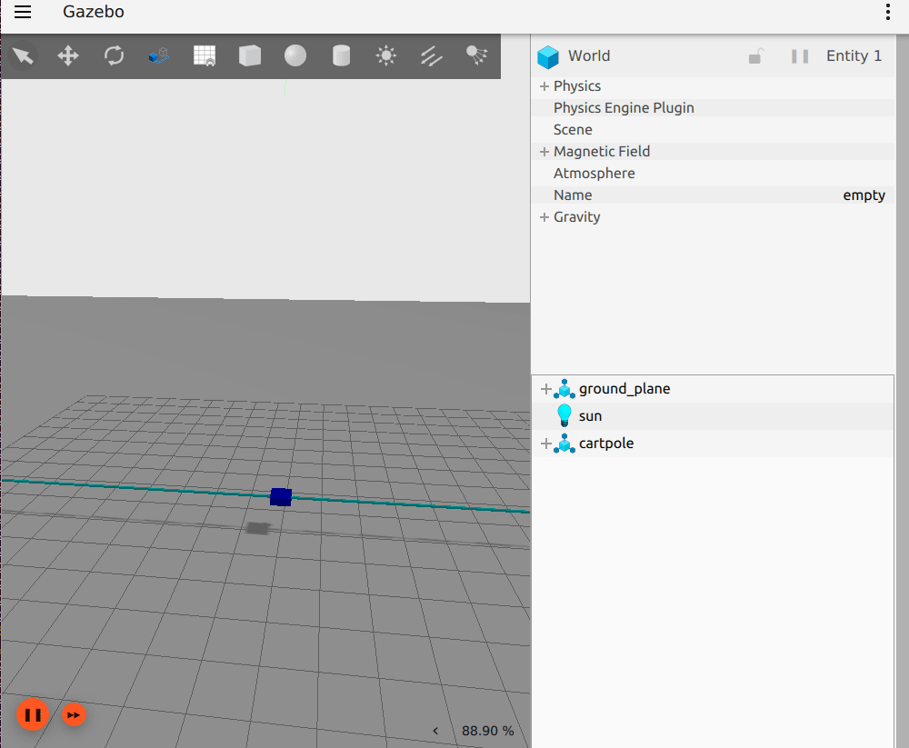
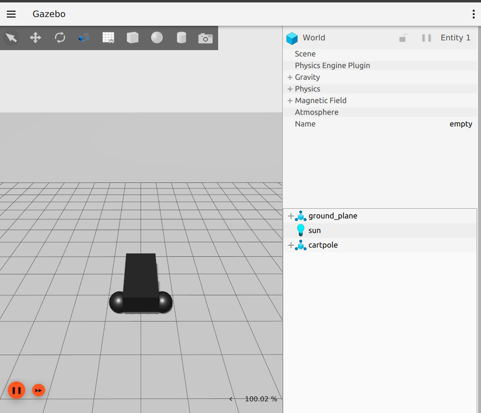
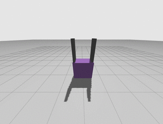

You're reading the documentation for an older, but still supported, version of ROS 2. For information on the latest version, please have a look at Kilted.
gz_ros2_control
This is a ROS 2 package for integrating the ros2_control controller architecture with the Gazebo simulator.
This package provides a Gazebo-Sim system plugin which instantiates a ros2_control controller manager and connects it to a Gazebo model.
Installation
Binary packages
gz_ros2_control is released for ROS 2 jazzy on Ubuntu. To use it, you have to install ros-jazzy-gz-ros2-control package, e.g., by running the following command:
sudo apt install ros-jazzy-gz-ros2-control ros-jazzy-gz-ros2-control-demos
Building from source
To use latest yet-to-be-released features or use a non-default Gazebo combination (see the compatibility matrix in the README for currently supported combinations), you have to build the package from source.
Note that gz_ros2_control depends on the version of Gazebo that is provided by the Gazebo Vendor packages gz_plugin_vendor and gz_sim_vendor.
Currently, for ROS 2 Jazzy and Rolling, the Gazebo version is Harmonic.
To compile gz_ros2_control from source, create a workspace, clone the correct branch of this repo and compile it:
mkdir -p ~/gz_ros2_control_ws/src
cd ~/gz_ros2_control_ws/src
git clone https://github.com/ros-controls/gz_ros2_control -b $ROS_DISTRO
rosdep install -r --from-paths . --ignore-src --rosdistro $ROS_DISTRO -y
cd ~/gz_ros2_control_ws
colcon build
Using docker
Build the docker image
cd Dockerfile
docker build -t gz_ros2_control .
and run the demo
Using Docker
Docker allows us to run the demo without the GUI if configured properly. The following command runs the demo without the GUI:
docker run -it --rm --name gz_ros2_control_demo --net host gz_ros2_control ros2 launch gz_ros2_control_demos cart_example_position.launch.py gui:=falseThen on your local machine, you can run the Gazebo client:
gz sim -g
Using Rocker
To run the demo with GUI we are going to use rocker which is a tool to run docker images with customized local support injected for things like nvidia support. Rocker also supports user id specific files for cleaner mounting file permissions. You can install this tool with the following instructions. (make sure you meet all of the prerequisites.
The following command will launch Gazebo:
rocker --x11 --nvidia --name gz_ros2_control_demo gz_ros2_control:latestThe following commands allow the cart to be moved along the rail:
docker exec -it gz_ros2_control_demo bash source /home/ros2_ws/install/setup.bash ros2 run gz_ros2_control_demos example_position
Add ros2_control tag to a URDF or SDF
Simple setup
To use ros2_control with your robot, you need to add some additional elements to your URDF or SDF.
You should include the tag <ros2_control> to access and control the robot interfaces. We should
include:
a specific
<plugin>for our robot<joint>tag including the robot controllers: commands and states.
<ros2_control name="GazeboSimSystem" type="system">
<hardware>
<plugin>gz_ros2_control/GazeboSimSystem</plugin>
</hardware>
<joint name="slider_to_cart">
<command_interface name="effort">
<param name="min">-1000</param>
<param name="max">1000</param>
</command_interface>
<state_interface name="position">
<param name="initial_value">1.0</param>
</state_interface>
<state_interface name="velocity"/>
<state_interface name="effort"/>
</joint>
</ros2_control>
Using mimic joints in simulation
To use mimic joints in gz_ros2_control you should define its parameters in your URDF or SDF, i.e, set the <mimic> tag to the mimicked joint (see the URDF specification or the SDF specification)
<joint name="right_finger_joint" type="prismatic">
<axis xyz="0 1 0"/>
<origin xyz="0.0 -0.48 1" rpy="0.0 0.0 0.0"/>
<parent link="base"/>
<child link="finger_right"/>
<limit effort="1000.0" lower="0" upper="0.38" velocity="10"/>
</joint>
<joint name="left_finger_joint" type="prismatic">
<mimic joint="right_finger_joint" multiplier="1" offset="0"/>
<axis xyz="0 1 0"/>
<origin xyz="0.0 0.48 1" rpy="0.0 0.0 3.1415926535"/>
<parent link="base"/>
<child link="finger_left"/>
<limit effort="1000.0" lower="0" upper="0.38" velocity="10"/>
</joint>
The mimic joint must not have command interfaces configured in the <ros2_control> tag, but state interfaces can be configured.
Using force-torque sensors in simulation
To use force-torque sensors in gz_ros2_control you should define its parameters in your URDF or SDF (see the SDF specification)
An example in SDF is shown here:
<sensor name="force_torque_sensor" type="force_torque">
<update_rate>10.0</update_rate>
<always_on>true</always_on>
<visualize>true</visualize>
<topic>force_torque_sensor</topic>
</sensor>
It is important to add this as reference sensor in the <gazebo> tag in your URDF file where the reference is the joint you will be attaching the force torque sensor to:
<gazebo reference="attached_joint">
<!-- If 'attached_joint' is of 'fixed' type,
setting 'preserveFixedJoint' to true will prevent the
links from being lumped together during the URDF to
SDF conversion. Otherwise, it can be omitted. -->
<preserveFixedJoint>true</preserveFixedJoint>
<sensor name="force_torque_sensor" type="force_torque">
<update_rate>10.0</update_rate>
<always_on>true</always_on>
<visualize>true</visualize>
<topic>force_torque_sensor</topic>
</sensor>
</gazebo>
Add the gz_ros2_control plugin
In addition to the ros2_control tags, a Gazebo plugin needs to be added to your URDF or SDF that actually parses the ros2_control tags and loads the appropriate hardware interfaces and controller manager. By default the gz_ros2_control plugin is very simple, though it is also extensible via an additional plugin architecture to allow power users to create their own custom robot hardware interfaces between ros2_control and Gazebo.
<gazebo>
<plugin filename="libgz_ros2_control-system.so" name="gz_ros2_control::GazeboSimROS2ControlPlugin">
<parameters>$(find gz_ros2_control_demos)/config/cart_controller.yaml</parameters>
</plugin>
</gazebo>
<plugin filename="libgz_ros2_control-system.so" name="gz_ros2_control::GazeboSimROS2ControlPlugin">
<parameters>$(find gz_ros2_control_demos)/config/cart_controller.yaml</parameters>
</plugin>
The gz_ros2_control <plugin> tag also has the following optional child elements:
<parameters>: A YAML file with the configuration of the controllers. This element can be given multiple times to load multiple files.<controller_manager_name>: Set controller manager name (default:controller_manager)
The following additional parameters can be set via child elements in the URDF/SDF or via ROS parameters in the YAML file above:
<hold_joints>: if set to true (default), it will hold the joints’ position if their interface was not claimed, e.g., the controller hasn’t been activated yet.<position_proportional_gain>: Set the proportional gain. (default: 0.1) This determines the setpoint for a position-controlled jointjoint_velocity = joint_position_error * position_proportional_gain.
or via ROS parameters:
gz_ros_control:
ros__parameters:
hold_joints: false
position_proportional_gain: 0.5
Additionally, one can specify a namespace and remapping rules, which will be forwarded to the controller_manager and loaded controllers. Add the following <ros> section:
<gazebo>
<plugin filename="libgz_ros2_control-system.so" name="gz_ros2_control::GazeboSimROS2ControlPlugin">
...
<ros>
<namespace>my_namespace</namespace>
<remapping>/robot_description:=/robot_description_full</remapping>
</ros>
</plugin>
</gazebo>
<plugin filename="libgz_ros2_control-system.so" name="gz_ros2_control::GazeboSimROS2ControlPlugin">
...
<ros>
<namespace>my_namespace</namespace>
<remapping>/robot_description:=/robot_description_full</remapping>
</ros>
</plugin>
Advanced: custom gz_ros2_control Simulation Plugins
The gz_ros2_control Gazebo plugin also provides a pluginlib-based interface to implement custom interfaces between Gazebo and ros2_control for simulating more complex mechanisms (nonlinear springs, linkages, etc) or actuator dynamics.
These plugins must inherit the gz_ros2_control::GazeboSimSystemInterface, which implements a simulated ros2_control
hardware_interface::SystemInterface.
The respective GazeboSimSystemInterface is specified in a URDF or SDF model and is loaded when the robot model is loaded. For example, the following XML will load a custom plugin instead:
<ros2_control name="GazeboSimSystem" type="system">
<hardware>
<plugin>gz_ros2_control_demos/GazeboCustomSimSystem</plugin>
</hardware>
...
<ros2_control>
<gazebo>
<plugin name="gz_ros2_control::GazeboSimROS2ControlPlugin" filename="libgz_ros2_control-system">
...
</plugin>
</gazebo>
<ros2_control name="GazeboSimSystem" type="system">
<hardware>
<plugin>gz_ros2_control_demos/GazeboCustomSimSystem</plugin>
</hardware>
...
<ros2_control>
<plugin name="gz_ros2_control::GazeboSimROS2ControlPlugin" filename="libgz_ros2_control-system">
...
</plugin>
The gz_ros2_control_demos/GazeboCustomSimSystem demonstrates how to implement actuator dynamics for a joint with
velocity command interface by using a configurable low pass filter. Run
ros2 launch gz_ros2_control_demos cart_example_velocity_custom_plugin.launch.py
and compare it with the behavior of cart_example_velocity.launch.py using any plotting tool like plotjuggler.
Set up controllers
Use the tag <parameters> inside <plugin> to set the YAML file with the controller configuration
and use the tag <controller_manager_prefix_node_name> to set the controller manager node name.
<gazebo>
<plugin name="gz_ros2_control::GazeboSimROS2ControlPlugin" filename="libgz_ros2_control-system">
<parameters>$(find gz_ros2_control_demos)/config/cart_controller.yaml</parameters>
<controller_manager_prefix_node_name>controller_manager</controller_manager_prefix_node_name>
</plugin>
<gazebo>
<plugin name="gz_ros2_control::GazeboSimROS2ControlPlugin" filename="libgz_ros2_control-system">
<parameters>$(find gz_ros2_control_demos)/config/cart_controller.yaml</parameters>
<controller_manager_prefix_node_name>controller_manager</controller_manager_prefix_node_name>
</plugin>
The following is a basic configuration of the controllers:
joint_state_broadcaster: This controller publishes the state of all resources registered to ahardware_interface::StateInterfaceto a topic of typesensor_msgs/msg/JointState.joint_trajectory_controller: This controller creates an action called/joint_trajectory_controller/follow_joint_trajectoryof typecontrol_msgs::action::FollowJointTrajectory.
controller_manager:
ros__parameters:
update_rate: 1000 # Hz
joint_state_broadcaster:
type: joint_state_broadcaster/JointStateBroadcaster
joint_trajectory_controller:
ros__parameters:
type: joint_trajectory_controller/JointTrajectoryController
joints:
- slider_to_cart
command_interfaces:
- position
state_interfaces:
- position
- velocity
gz_ros2_control_demos
There are some examples in the gz_ros2_control_demos package. To specify whether to use URDF or SDF, you can launch the demo in the following way (the default is URDF):
ros2 launch gz_ros2_control_demos <launch file> description_format:=sdf
Cart on rail
These examples allow to launch a cart in a 30 meter rail.

You can run some of the example configurations by running the following commands:
ros2 launch gz_ros2_control_demos cart_example_position.launch.py
ros2 launch gz_ros2_control_demos cart_example_velocity.launch.py
ros2 launch gz_ros2_control_demos cart_example_effort.launch.py
When the Gazebo world is launched, you can run some of the following commands to move the cart.
ros2 run gz_ros2_control_demos example_position
ros2 run gz_ros2_control_demos example_velocity
ros2 run gz_ros2_control_demos example_effort
Mobile robots

You can run some of the mobile robots running the following commands:
ros2 launch gz_ros2_control_demos diff_drive_example.launch.py
ros2 launch gz_ros2_control_demos tricycle_drive_example.launch.py
ros2 launch gz_ros2_control_demos ackermann_drive_example.launch.py
When the Gazebo world is launched you can run some of the following commands to move the robots.
ros2 run gz_ros2_control_demos example_diff_drive
ros2 run gz_ros2_control_demos example_tricycle_drive
ros2 run gz_ros2_control_demos example_ackermann_drive
To demonstrate the setup of a namespaced robot, run
ros2 launch gz_ros2_control_demos diff_drive_example_namespaced.launch.py
which will launch a diff drive robot within the namespace r1.
Note
The ros2_control settings for the controller_manager and the controller defined in diff_drive_controller.yaml use wildcards to match all namespaces.
To run the Mecanum mobile robot run the following commands to drive it from the keyboard:
ros2 launch gz_ros2_control_demos mecanum_drive_example.launch.py
ros2 run teleop_twist_keyboard teleop_twist_keyboard --ros-args -p stamped:=true
Gripper
The following example shows a parallel gripper with a mimic joint:
ros2 launch gz_ros2_control_demos gripper_mimic_joint_example_position.launch.py

To demonstrate the setup of the initial position and a position-mimicked joint in case of an effort command interface of the joint to be mimicked, run
ros2 launch gz_ros2_control_demos gripper_mimic_joint_example_effort.launch.py
instead.
Send example commands:
ros2 run gz_ros2_control_demos example_gripper
Pendulum with passive joints (cart-pole)
The following example shows a cart with a pendulum arm:
ros2 launch gz_ros2_control_demos pendulum_example_effort.launch.py
ros2 run gz_ros2_control_demos example_effort
This uses the effort command interface for the cart’s degree of freedom on the rail. To demonstrate that the physics of the passive joint of the pendulum is solved correctly even with the position command interface, run
ros2 launch gz_ros2_control_demos pendulum_example_position.launch.py
ros2 run gz_ros2_control_demos example_position
Notes on the command interface
The gz_ros2_control plugin receives commands from the ROS2 Control controllers through various command interfaces and applies them to Gazebo simulated joints. Specifically, there are three types of command interfaces. Their current behavior is described below:
Effort Command Interface: The force or torque requested by the controller is applied directly to the joint as is.
Velocity Command Interface: The velocity requested by the controller is applied directly to the joint as is. Note that on some vehicle models, using the velocity command interface to drive the wheels may cause slippage and odometer errors. This is because the wheels are accelerated to the required speed instantaneously, but the chassis cannot reach the same speed immediately.
Position Command Interface: The gz_ros2_control plugin controls the velocity of the joints to make them reach the position required by the controller. The velocity is calculated as
joint_velocity = position_proportional_gain * joint_position_error * controller_manager_update_rate, whereposition_proportional_gainis configurable as described above. For those who are designing control systems: This means that the response of the joint is equivalent to a discrete-time first-order system. The system’s time constant isT = 1 / (position_proportional_gain * controller_manager_update_rate). In theory,position_proportional_gaincannot be greater than 2 to maintain system stability, and cannot be greater than 1 to avoid oscillations.